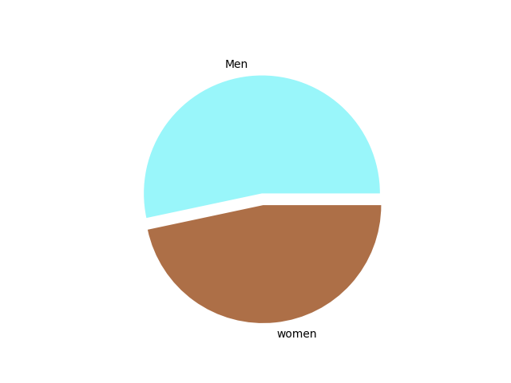
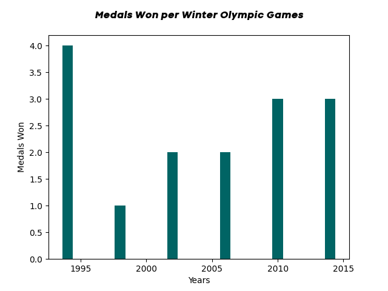
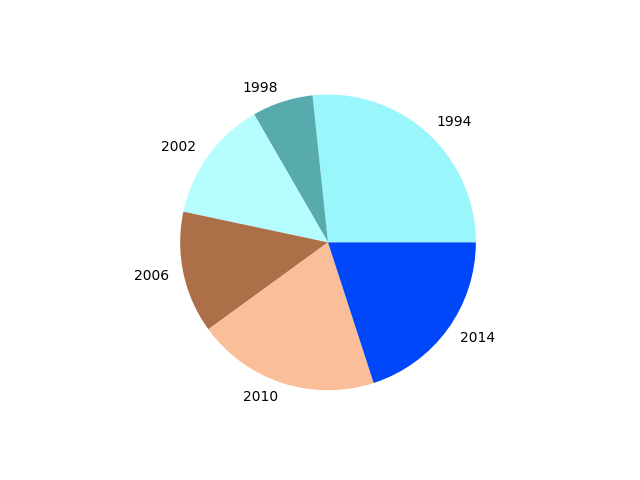
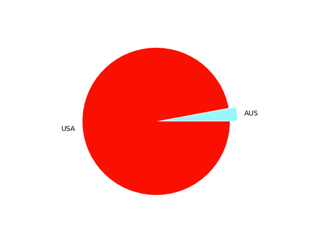
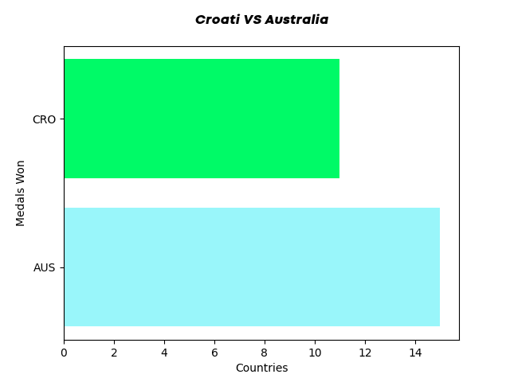
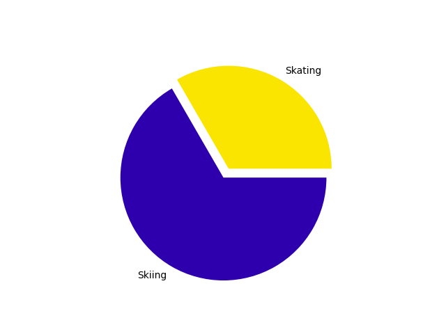

hello
Winter Olympics Analysis for Australia
Australia has never had much luck with performance in the Winter Olympics. They have only been able to take home 15 medals (men and women combined) since they started competing. The chart below shows the comparison of medals won between both genders.
Data Point
Men vs Womeen
While the amount of medals won by male and female athletes in very similar, the amount of medals won each Winter Olympic Games has change over the past years.
Data Point
 Australia might only have 15 medals in total but 5 of those 15 are gold medals! Quite incredible! The following graph compaires total amounts of gold medals earned between Autralia and the USA (who have the most medals earned at the Winter Olympic Games)
AUS vs USA
Well... that doesn't look too good for Australia. That was quite unfair of me to compare the leader for medals earned and a Australia. Let's compare Australia to a country that has a similar medal tally.
final section
Finally, Australia has only ever won medals in 2 sports (skating and skiing). The following graph comapres how many medals were won in both sports.
